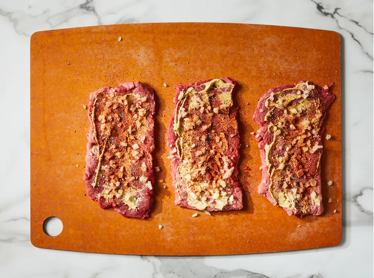
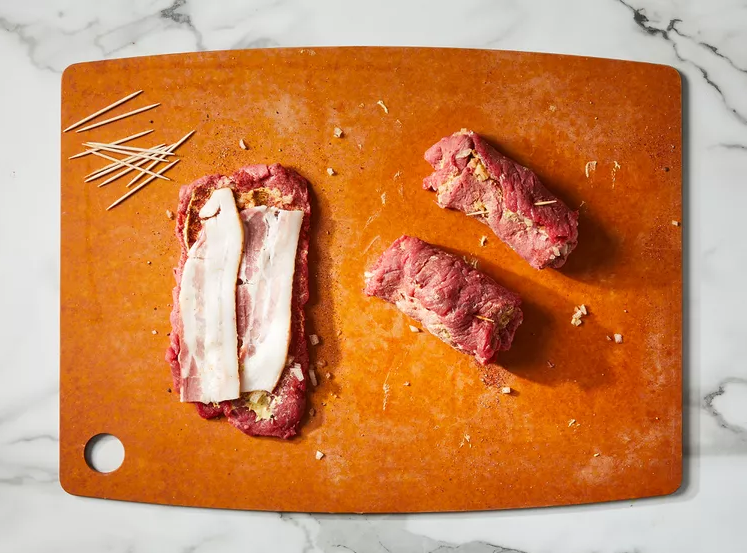
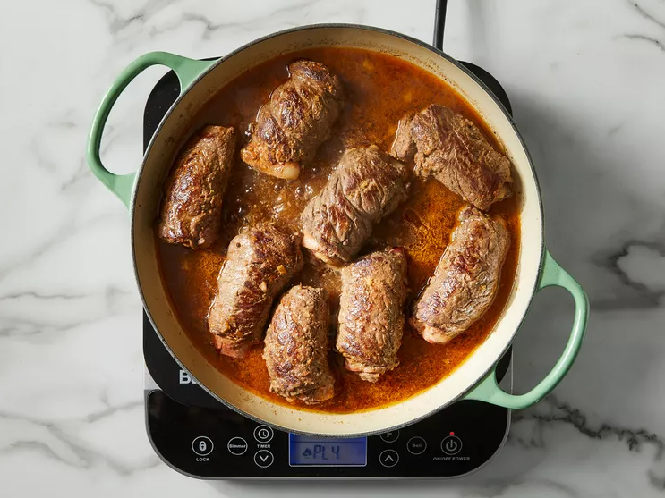
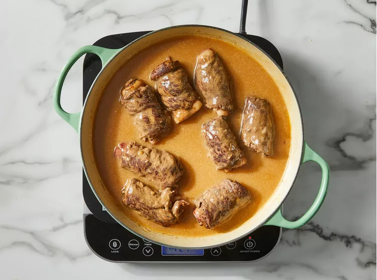

Spread 1/2 tablespoon mustard over one side of each piece of steak; sprinkle onion, paprika, salt, and pepper evenly over the steaks.
Lay one slice of bacon on each piece; roll up steaks jelly roll-style and secure with toothpicks.
Heat canola oil in a skillet over medium heat; cook beef rouladen on all sides until browned. Add broth and water; bring to a boil. Reduce heat to medium-low; cover and simmer until tender, about 30 minutes.
Remove beef rouladen; strain broth mixture and return liquid to the skillet. Whisk cornstarch and 1 cup of water together until smooth; slowly pour cornstarch mixture into the skillet, stirring continually until the sauce has thickened, 2 to 3 minutes.
Stir in sour cream; return rolls to the sauce and serve immediately.
